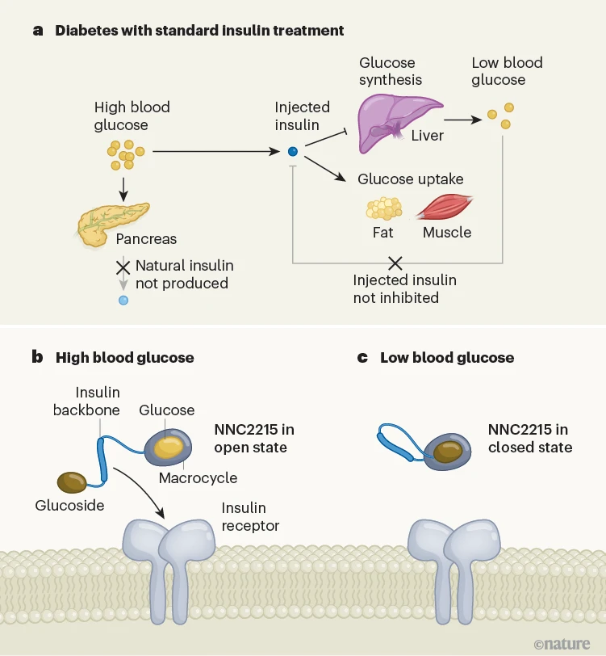

The healing power of placentas, smart insulin, and the woman who could smell Parkinson's
I have a backlog of interesting science stories to share, so here are a few medical miracles for you.
The Woman Who Could Smell Parkinson’s
(The New York Times, with gift link!)
Read the full article because it’s a fascinating story, but here’s a quick hook:
Joy had always had a sensitive nose. One day, she noticed a sudden change in her husband’s smell; years later, he was diagnosed with Parkinson’s. When she accompanied him to a Parkinson’s support group, she noticed that every person with Parkinson’s in the room smelled exactly like her husband.
Her Face Was Unrecognizable After an Explosion. A Placenta Restored It.
(The New York Times, with gift link!)
The placenta, an organ that supplies nutrients to a developing fetus, is typically thrown out after birth. But in this case, the amniotic membrane from a donated placenta was used to repair the skin of a burn victim, with miraculous results. Though we’ve known about this technique since at least 1910, it’s not common practice today.
What’s so special about placentas?
- Placentas are “immunologically privileged”: this means placental grafts are not rejected by the host immune system after a transplant! (This is related to the fact that the placenta prevents the maternal immune system from attacking the fetus during pregnancy.)
- Placental tissue produces signaling molecules, including cytokines and growth factors, that urge other cells towards healing and regrowth. Placental grafts have been used to treat chronic wounds that won’t otherwise heal. (PubMed article)
Smart insulin switches itself off in response to low blood sugar
People with type 1 diabetes inject insulin to lower their blood glucose, but they run the risk of lowering it too much. A new insulin molecule has been invented that switches itself off when blood glucose levels are too low! It hasn’t been tested in humans yet, but the possibility is exciting.

Figure 1 | A glucose-responsive insulin for diabetes. a, In people with type 1 diabetes, the pancreas is not able to produce insulin to counteract the increase in blood glucose that occurs after eating. To reduce the harmful long-term consequences of high blood glucose, insulin can be injected to lower blood glucose through uptake by fat and muscle tissue, and prevention of glucose synthesis by the liver. However, injected insulin remains active even once glucose levels are back to normal, potentially causing a drop to dangerously low levels (hypoglycaemia).
b, Hoeg-Jensen et al. designed a glucose-sensitive insulin called NNC2215, consisting of an insulin backbone, a glucose-binding macrocycle (ring-shaped molecule) and a glucoside (glucose-derived molecule). At high glucose concentrations, glucose binds to the macrocycle, putting NNC2215 into an open conformation that enables it to bind to the insulin receptor to exert its biological effects.
c, At low glucose concentrations, the glucoside occupies the macrocycle, putting NNC2215 into a closed conformation and lowering its activity.
(Image and caption: Nature)